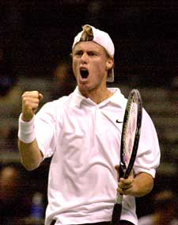
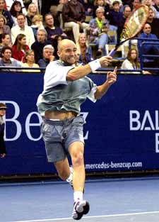
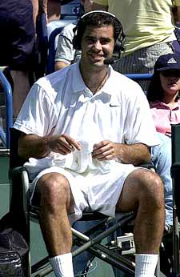
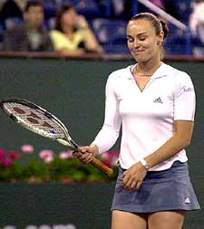

← Bài trước: The Diabolical Scoring System of Tennis | 🏠 Mental Game Trang chủ | Bài tiếp: → The Inside Out Backhand
Trạng thái hiệu suất lý tưởng
Thư viện kiến thức quần vợt thống nhất — Cơ bản, Phân tích kỹ thuật, Thư viện tham khảo và nhiều hơn nữa
Trạng thái hiệu suất lý tưởng
Jim Loehr

Trong những trận đấu quyết định, sức mạnh tinh thần thường là yếu tố quyết định.
Chơi quần vợt thi đấu ít nhất là 50% về mặt tinh thần, có thể lên đến 90% trong một số tình huống thi đấu. Đó là những gì các tay vợt chuyên nghiệp nói. Tất nhiên, bạn cần kỹ năng kỹ thuật, nhưng trong những trận đấu quyết định, khi các tay vợt thường có thể lực tương đương, sức mạnh tinh thần là yếu tố quyết định.
Với tư cách là một tay vợt, bạn đã dành nhiều thời gian để phát triển và cố gắng cải thiện kỹ năng của mình. Bạn đã luyện tập, đầu tư vào vợt mới và nhận các bài học. Nhưng bạn đã dành bao nhiêu thời gian để phát triển các kỹ năng tinh thần quan trọng để chơi tốt nhất, yêu thích trải nghiệm thi đấu và thực hiện tiềm năng thực sự của mình?
Trong số hàng nghìn giờ mà hầu hết các tay vợt thi đấu dành cho trò chơi, chỉ một phần nhỏ được dành cho việc phát triển trò chơi tinh thần.
Các tay vợt mơ ước có cú thuận tay như Andre Agassi hoặc cú giao bóng như Pete Sampras. Nhưng chìa khóa quan trọng nhất để chiến thắng - sức mạnh tinh thần nhất quán - nằm trong tầm tay của bất kỳ tay vợt nào.
Trong loạt bài này của Tennisplayer.net, chúng tôi sẽ đào tạo bạn để phát triển cùng các kỹ năng tinh thần như các tay vợt chuyên nghiệp để chơi quần vợt thắng cuộc. Quan trọng hơn, những kỹ năng này sẽ cho phép bạn tận hưởng trò chơi và trải nghiệm thi đấu theo cách bạn có thể không biết là có thể.

Bạn có thể không bao giờ có cú thuận tay như Agassi, nhưng sức mạnh tinh thần của anh ta nằm trong tầm tay của bạn.
Trạng thái hiệu suất lý tưởng
Chìa khóa để có được sức mạnh tinh thần là hiểu cách tạo ra Trạng thái Hiệu suất Lý tưởng của riêng bạn. Trạng thái Hiệu suất Lý tưởng, hay IPS, là một trạng thái cảm xúc nội tâm rất cụ thể được liên kết với mức độ hiệu suất cao nhất. Và nó có thể được đào tạo, chỉ như một cú thuận tay topspin.
Để đạt được IPS, cần những gì?
Đã được chứng minh rõ ràng rằng các vận động viên hàng đầu chơi tốt nhất khi họ vui vẻ nhất, khi trò chơi thú vị nhất.
Chơi quần vợt tốt nhất của bạn nên là một trải nghiệm gần như say mê, được đặc trưng bởi năng lượng lớn, nhiệt tình, vui vẻ và tự tin. Có một cảm giác bình tĩnh ở giữa cơn bão. Cơ bắp của bạn thư giãn và các cú đánh của bạn tự do và mạnh mẽ.
Chơi quần vợt tốt nhất của bạn nên cảm thấy không có áp lực. Các tay vợt hàng đầu chơi tốt trong các trận đấu lớn vì họ thực sự không cảm thấy áp lực như cách một tay vợt bình thường.
Ban đầu, nghiên cứu của tôi với các vận động viên hàng đầu trong nhiều môn thể thao đã cho thấy mối tương quan trực tiếp giữa các màn trình diễn tốt nhất của họ và những đặc điểm này. Kết luận? Hiệu suất trực tiếp liên quan đến cách bạn cảm thấy bên trong. Một cách chữa là, cảm xúc điều khiển mọi thứ. Và học cách tạo ra trạng thái cảm xúc nội tâm thích hợp là chìa khóa để chơi quần vợt thắng cuộc.
Lần này sau lần khác, tôi tìm thấy các vận động viên báo cáo cảm thấy một số hoặc tất cả các đặc điểm sau:
Trạng thái Hiệu suất Lý tưởng: khi quần vợt là vui vẻ, các vận động viên hàng đầu chơi tốt nhất và tận hưởng nó nhiều nhất.
Thư giãn về thể chất
Dễ dàng
Bình tĩnh về tinh thần
Tự động
Thấp lo âu
Nhạy bén
Năng lượng
Tập trung tinh thần
Tối ưu
Tự tin
Vui vẻ
Đang kiểm soát
Các tay vợt hàng đầu dường như có thể tạo ra trạng thái cảm xúc này một cách thường xuyên, gần như theo yêu cầu. Đạt được trạng thái cân bằng về thể chất, cảm xúc và tinh thần này là chìa khóa để thành công trong quần vợt chuyên nghiệp, và nó có thể trở thành chìa khóa để thắng cuộc quần vợt cho bạn, cũng vậy.
Bạn có nói, bạn chưa bao giờ cảm thấy gì gần giống với các đặc điểm của IPS ở giữa một trận đấu khó khăn? Không quan trọng bạn đã nghe hoặc tin gì, sức mạnh tinh thần không phải là thứ bạn sinh ra với, nó là thứ bạn học được.

Các tay vợt hàng đầu chơi tốt trong các trận đấu lớn vì họ không cảm thấy áp lực như cách các tay vợt bình thường.
Trong các bài giảng đào tạo này, bạn sẽ học được một loạt các phương pháp đơn giản, được chứng minh để cho phép bạn tạo ra Trạng thái Hiệu suất Lý tưởng của riêng mình, để vượt qua việc bị kẹt, để học cách yêu thích trận đấu cạnh tranh, và để chơi trò chơi với một cảm giác thực sự vui vẻ.
Tập trung vào từ "đào tạo". Không phải là vấn đề về việc chỉ hiểu cách bạn nên nghĩ và cảm thấy. Đó là vấn đề về việc thực sự nghĩ và cảm thấy như vậy. Những bài viết này sẽ trình bày một loạt các kỹ thuật thể chất và tâm lý cụ thể mà, khi được thực hành với sự kiên trì trong thời gian dài, sẽ cho bạn khả năng thực sự thay đổi hóa học nội tâm của mình.
Sức mạnh tinh thần không gì hơn là khả năng này để tạo ra IPS một cách nhất quán, và trạng thái hòa hợp về thể chất và tinh thần tự nhiên dẫn đến quần vợt tốt nhất của bạn bất cứ khi nào bạn trên sân.
Kết quả cho bạn sẽ giống như sức mạnh tinh thần mà chúng ta thấy trong các tay vợt hàng đầu thế giới. Khả năng thắng nhiều trận đấu hơn, đánh bại những tay vợt mà bạn muốn đánh bại, và tận hưởng quá trình chơi quần vợt thi đấu.
Trong 20 năm qua, tôi đã làm việc với hàng nghìn tay vợt, xuất bản sách và bài viết, và sản xuất video hướng dẫn. Tuy nhiên, điều vẫn khiến tôi ngạc nhiên là bao nhiêu tay vợt không biết rằng những kỹ thuật đào tạo đã được thiết lập có thể cung cấp cho họ các công cụ tinh thần và cảm xúc để đạt được mục tiêu thi đấu của mình.
Gần như bất kỳ tay vợt nào từ cấp độ 3.0 trở lên đều có thể tranh luận về lý thuyết của cách đánh cú thuận tay hoặc cú giao bóng. Hầu hết họ hoàn toàn không biết về tầm quan trọng của việc đào tạo chiều tinh thần.

Cách bạn chơi trực tiếp liên quan đến cách bạn cảm thấy bên trong.
The 16 Second Cure
Ví dụ, hai bài viết đầu tiên sẽ xem xét cách bạn dành thời gian giữa các điểm. Hầu hết các tay vợt không biết rằng thời gian giữa các điểm thực sự chiếm phần lớn thời gian trong tất cả các trận đấu thi đấu. Họ cũng không biết rằng thời gian giữa các điểm đóng vai trò quan trọng trong việc tạo ra và duy trì Trạng thái Hiệu suất Lý tưởng.
Chúng ta sẽ thấy cách bạn có thể sử dụng thời gian giữa các điểm để trở thành tay vợt có sức mạnh tinh thần mà bạn thực sự muốn trở thành.
Tôi gọi quá trình này là "The 16 Second Cure". Tôi sẽ trình bày một giải thích chi tiết về cách các tay vợt chuyên nghiệp sử dụng thời gian này để duy trì sức mạnh tinh thần. Sau đó, tôi sẽ chỉ cho bạn từng bước cách phát triển cùng khả năng đó.
The 16 Second Cure: sử dụng thời gian giữa các điểm để trở thành tay vợt mà bạn thực sự muốn trở thành.
Tôi cũng sẽ tận dụng cơ hội để trả lời một số chỉ trích về "The 16 Second Cure" được đưa ra bởi một nhà đóng góp khác của TennisPlayer, Dr. Roland Carlstedt trong bài viết của anh ấy "The 8 Greatest Myth of Sports Psychology". Hãy theo dõi.
Trong các bài viết tiếp theo, tôi sẽ đề cập đến các yếu tố chính khác của trò chơi tinh thần, bao gồm:
Choking: Choking thực sự là gì, và cách đào tạo để vượt qua nó.
Hít thở: Bạn có đang giữ hơi ở tất cả những thời điểm sai lầm không?
Từ Tích cực sang Tích cực: Học cách biến đổi năng lượng của bạn trên sân.
Bad Calls: Xử lý với đối thủ - và với chính mình - khi bạn nhận được các cuộc gọi xấu.
In Your Mind's Eye: Bạn có thể nhìn thấy mình trở thành tay vợt mà bạn muốn trở thành không?

Jim Loehr là một nhà tiên phong huyền thoại trong lĩnh vực hiệu suất con người. Một tay vợt chuyên nghiệp hàng đầu tự mình, Jim đã tạo ra lĩnh vực đào tạo sức mạnh tinh thần với nghiên cứu cách mạng của anh ấy về các tay vợt chuyên nghiệp hàng đầu. Anh ấy đã trở thành một trong những giọng nói có ảnh hưởng nhất trong quần vợt và huấn luyện quần vợt trong hơn 30 năm, và là tác giả của nhiều cuốn sách bán chạy nhất.
Anh ấy đã mở rộng ảnh hưởng của mình xa hơn nhiều lĩnh vực thể thao với việc thành lập Học viện Hiệu suất Con người, nơi anh ấy và đội ngũ của anh ấy đã làm việc với hàng trăm lãnh đạo trong kinh doanh, lực lượng cảnh sát và lực lượng đặc nhiệm quân sự. Trong thập kỷ qua, anh ấy cũng đã chỉ đạo một học viện cho các tay vợt trẻ giúp các em học được ý nghĩa thực sự của việc thắng cuộc trong cuộc sống.
Nguồn: tennisplayer.net lưu trữ — The Ideal Performance State.docx (Thư viện giảng dạy của John Yandell, 2002-2022). Đã được trích xuất và hiển thị dưới dạng HTML cho Tennis Future Lab.